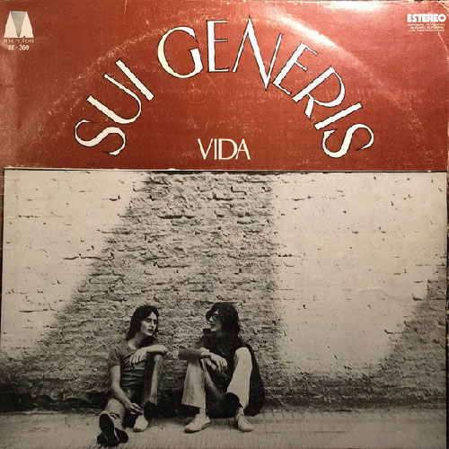
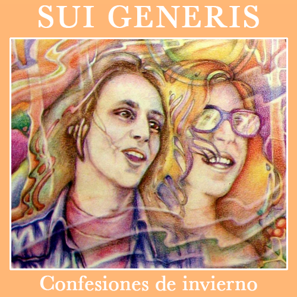
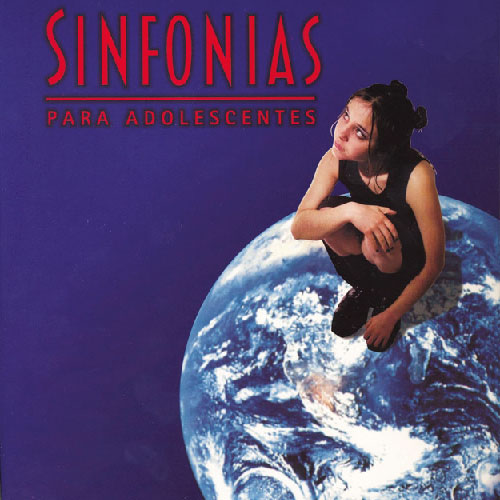

Sui Generis del latín "único en su tipo" fue un dúo argentino de rock formado por Charly García (piano, guitarra acústica y voz) y Nito Mestre (flauta, guitarra acústica y voz) en 1969. Si bien a lo largo de su carrera contaron con miembros de apoyo, fue esa formación esencial la que determinó el estilo y arreglos de sus composiciones.
Sinfonias para adolescentes
Sinfonías para adolescentes es el cuarto y último álbum de estudio del grupo de rock argentino Sui Generis, integrado por Charly García y Nito Mestre. Luego de 25 años de su separación en el estadio Luna Park el conjunto se reunió y grabó este disco, integrado mayormente por covers elegidos por Charly García y además nuevos temas del grupo.
Existen muchos factores que determinaron el regreso de Sui Generis entre los años 2000 y 2001: Cuando Charly escribió "El día que apagaron la luz", según declaraciones, era una canción al estilo Sui Generis; también el accidente que tuvo Nito Mestre con su auto, donde Charly comenzó a visitar más seguido a su compañero, que venía de pasar un momento muy malo. Las grabaciones de Sinfonías para adolescentes fueron un momento tenso para Nito, ya que el disco se volcó hacia las pretensiones de Charly (como el hecho de tocar covers elegidos por él, de usar su propia banda), cuando debía haber un equilibrio entre ambos.
Además de covers, el disco incluía temas olvidados de la primera época de Sui ("Cuando te vayas", "Espejos", "Monoblock", "Afuera de la ciudad" y "Juan Represión", escritos y compuestos por Charly García y "Digo de vos", por Alejandro Correa) y cinco temas nuevos.
El nuevo disco fue presentado en un multitudinario show en el estadio de Boca Juniors. Cuando la prensa acusó al dúo de editar este disco solamente por ambiciones económicas, Sui Generis realizó un show gratuito en el Parque Sarmiento. Ambos recitales quedaron registrados en el CD doble Si - Detrás de las paredes.
Lista de temas
«El día que apagaron la luz» (Charly García) (4:31)
«Usame un poquito más» (Take me for a little while, de Martin Trade) (4:31)
«Yo soy su papá» (Can we still be friends?, de Todd Rundgren) (4:43)
«Afuera de la ciudad» (Caminaba) (Charly García) (5:04)
«Tu pueblo también» (Her town too, de Souther/Taylor/Wachtel) (4:08)
«Cuando te vayas» (Charly García) (2:07)
«No es el fin» (Intermedio) (Charly García) (3:35)
«Todos van al News Café» (Ñu/Sca) (Charly García) (2:30)
«Ten pena» (Mercy, mercy, de Covay/Miller) (3:33)
«Aquí sin tu amor» (Here without you, de Gene Clark) (4:24)
«Aguante la amistad» (Set you free this time, de Gene Clark) (3:19)
«El chico y yo» (The Child and I, de Carlos Vila Dibello) (3:49)
«Espejos» (Charly García) (3:12)
«Monoblock» (Charly García y Carlos Piegari) (2:45)
«Me tiré por vos» (Charly García) (4:32)
«Noveno B» (Charly García) (4:24)
«Juan Represión» (Charly García) (4:09)
«Digo de vos» (Alejandro Correa) (1:58)
«Sé mi nena» (Be my baby, de Jeff/Greenwich/Spector) (3:23)
Cuando te Vayas
[...] Y te daré palabras, cuando te vayas, para que vos las guardes, cuando te vayas. Y aunque al querer decirlasse te quiebre la voz, golpearán en tu pecho y en mi canción
Otros albumes de la banda:

Vida ~ 1972
Vida es el primer álbum de estudio de Sui Generis, dúo de rock argentino integrado por Charly García y Nito Mestre. Fue publicado en noviembre de 1972

Confesiones de invierno ~ 1973
Confesiones de invierno es el segundo álbum de estudio del dúo Sui Generis, conformado por Charly García y Nito Mestre. Fue editado en 1973.
Pequeñas anécdotas sobre las instituciones ~ 1974
Pequeñas anécdotas sobre las instituciones es el tercer álbum de estudio de Sui Géneris, para ese entonces a Charly García y Nito Mestre, se les había sumado Rinaldo Rafanelli y Juan Rodríguez, convirtiéndose entonces en un cuarteto eléctrico.

Sinfonías para adolescentes ~ 2000
Sinfonías para adolescentes es el cuarto y último álbum de estudio del grupo de rock argentino Sui Generis. Luego de 25 años de su separación en el estadio Luna Park el conjunto se reunió y grabó este disco.